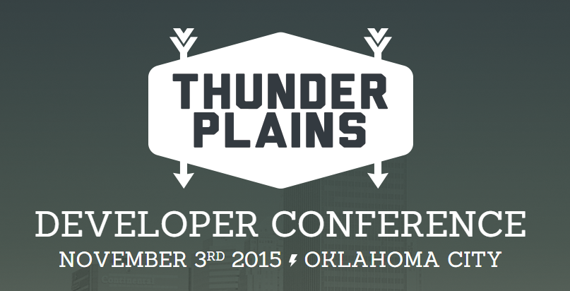

Important Talk
A talk about all the important things!

Our goal as software engineers is to produce code that is:
- Reliable
- Efficient
- Understandable
- High Quality
- Blah blah blah ...
Let's worry about those later...
Today We're Talking About
- Easter Eggs
- Font Creation
- Text Manipulation
- Stickers
- Farts
Easter Eggs with Cheet.js
Map a sequence of keypresses to a callback.
DEMO TIME!
That was magical... tell me how.
cheet.js is a library that listens to key events and invokes a callback if the criteria of your easter egg is met.
bower install cheet.js
Examples
cheet('↑ ↑ ↓ ↓ ← → ← → b a', function () {
alert('Voilà!');
});
cheet('i d d q d', function () {
alert('god mode enabled');
});
cheet('o n e a t a t i m e', {
next: function (str, key, num, seq) {
console.log('key pressed: ' + key);
console.log('progress: ' + num / seq.length);
console.log('seq: ' + seq.join(' '));
},
fail: function () {
console.log('sequence failed');
},
done: function () {
console.log('+30 lives ;)');
}
});
More Examples
cheet('o n c e', function () {
console.log('This will only fire once.');
cheet.disable('o n c e');
});
var sequences = {
cross: 'up down left right',
circle: 'left up right down'
};
cheet(sequences.cross);
cheet(sequences.circle);
cheet.done(function (seq) {
if (seq === sequences.cross) {
console.log('cross!');
} else {
console.log('circle!');
}
});
C
Develop an app that makes awesome sound effects as I move.
Accelerometer APIs are available, but how do I use that data to recognize a motion?
JS Motion Gesture
A JavaScript library hidden in the depths of SourceForge
“The software converts the continual stream of motion readings into distinct gesture events. All you need to do is attach event-handlers to the gestures. Your functions get called when the user makes the gesture with the device.”
Defining Gestures
Motion.Gesture.Library.SLAP={
"id": "slap",
"signature": {
"roots": [
{
"points": [
{
"axis": "xg",
"window": {
"value": {
"min": -10,
"max": 10
}
}
},
{
"axis": "yg",
"window": {
"value": {
"min": -10,
"max": 10
}
}
},
{
"axis": "zg",
"window": {
"value": {
"min": -10,
"max": 10
}
}
}
],
"next": {
"points": [
{
"axis": "zg",
"window": {
"value": {
"min": 15,
"max": 100
}
}
}
],
"window": {
"time": {
"width": 1000,
"delay": 0
}
}
},
"window": {
"time": {
"width": 1000
}
}
}
]
}
}
Handling Gestures
function playAudio(sound) {
createjs.Sound.play(sound);
soundImage.src='/'+sound+'.png';
};
gestureMonitor = new Motion.Gesture.Recognition.Monitor();
gestureMonitor.addGesture(Motion.Gesture.Library.SLAP, function() {
playAudio("slap");
});
new Motion.Gesture.Recognition.MotionDataPump(gestureMonitor, 5).start();
The End Result
Let's see this magic in action!